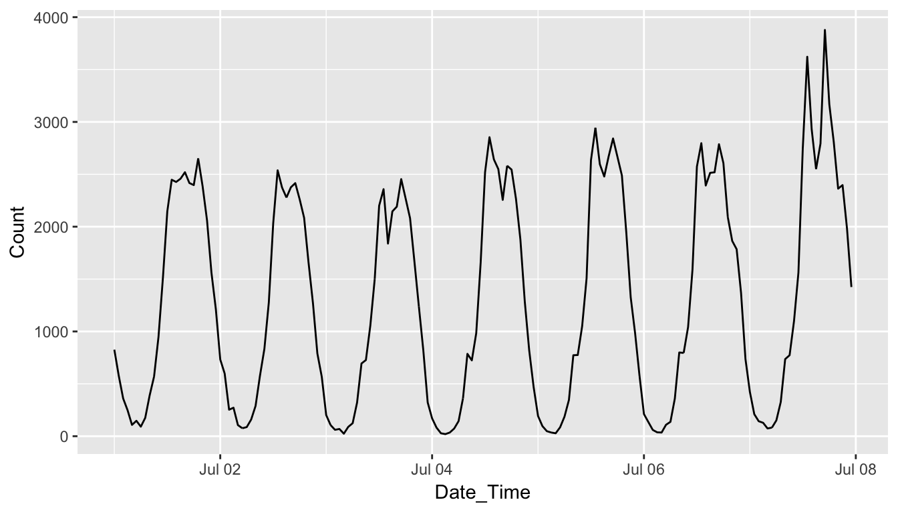

The goal of rwalkr is to provide APIs to the pedestrian data from the City of Melbourne in tidy data form.
Installation
You could install the stable version from CRAN:
install.packages("rwalkr")You could install the development version from Github using:
# install.packages("devtools")
devtools::install_github("earowang/rwalkr")Usage
APIs
There are two APIs available to access Melbourne pedestrian data: compedapi and Socrata. The former drives the walk_melb() function, where counts are uploaded on a daily basis; the latter powers the run_melb() function, where counts are uploaded on a monthly basis. Given the function names, the function run_melb() pulls the data at a much faster speed than walk_melb().
The function walk_melb() specifies the starting and ending dates to be pulled, whereas run_melb() requires years to define the time frame. If a selection of sensors are of interest, run_melb() provides the flexibility for sensor choices.
library(rwalkr)
start_date <- as.Date("2017-07-01")
# tweak = TRUE gives the consistent sensors to the ones from run_melb().
# By default it's FALSE for back compatibility.
ped_walk <- walk_melb(from = start_date, to = start_date + 6L, tweak = TRUE)
ped_run <- run_melb(year = 2016:2017, sensor = NULL) # NULL means all sensors
head(ped_walk)
#> Sensor Date_Time Date Time Count
#> 1 State Library 2017-07-01 2017-07-01 0 334
#> 2 Collins Place (South) 2017-07-01 2017-07-01 0 82
#> 3 Collins Place (North) 2017-07-01 2017-07-01 0 51
#> 4 Flagstaff Station 2017-07-01 2017-07-01 0 0
#> 5 Melbourne Central 2017-07-01 2017-07-01 0 826
#> 6 Town Hall (West) 2017-07-01 2017-07-01 0 682There are missing values (i.e. NA) in the dataset. By setting na.rm = TRUE in both functions, missing values will be removed.
Here’s an example to use ggplot2 for visualisation:
library(ggplot2)
ggplot(data = subset(ped_walk, Sensor == "Melbourne Central")) +
geom_line(aes(x = Date_Time, y = Count))
It’s worth noting that some sensor names are coded differently by these two APIs. The argument tweak = TRUE ensures the sensor names returned by walk_melb() consistent to the ones in run_melb() and pull_sensor(), both of which are supported by Socrata. The dictionary for checking sensor names between two functions is available through lookup_sensor().
It’s recommended to include an application token in run_melb(app_token = "YOUR-APP-TOKEN"), which you can sign up here.
Shiny app
The function shine_melb() launches a shiny app to give a glimpse of the data. It provides two basic plots: one is an overlaying time series plot, and the other is a dot plot indicating missing values. Below is a screen-shot of the shiny app.